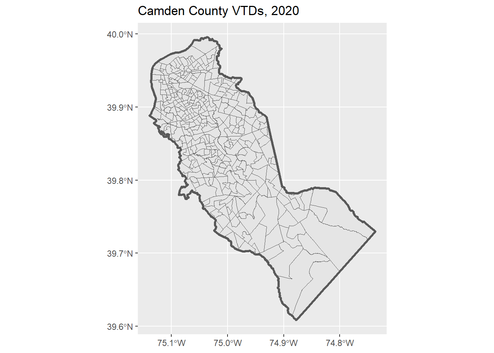
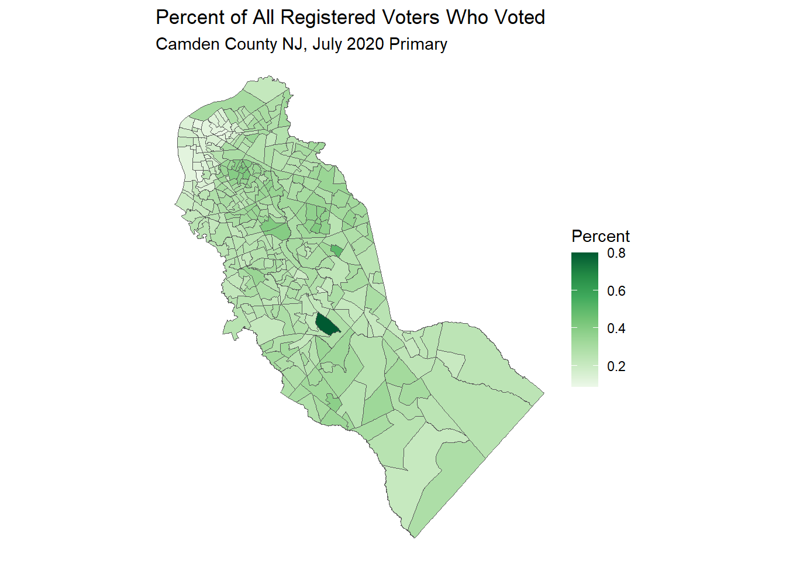
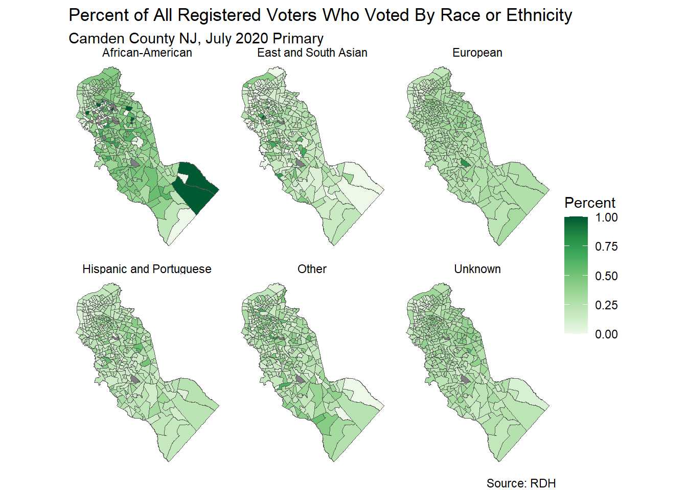

Exercise 2. Import and Map Voter Turnout Data
Population Profiling with R, August 2024
1 Summary
In this exercise, we will:
- import the 2020 voting tabulation districts (VTDs) for Camden County NJ from a Shapefile
- import a CSV with voter turnout data from the 2020 primary election
- join the tabular voter turnout data to the VTD polygons
- map the voter turnout for the July 2020 primary
- transform the attribute table from a wide to long format
- create facet maps (i.e., one map for each subset of the data)
This notebook will feature the following packages:
readrdplyrsfggplot2tidyr
2 Setup
Load the packages we need:
Define the common directory where we’ll save local copies:
my_data_dir <- tools::R_user_dir("datafordemocracy", which = "data")
if (!dir.exists(my_data_dir)) dir.create(my_data_dir, recursive = TRUE)
tools::file_path_as_absolute(my_data_dir)[1] "C:/Users/Andy/AppData/Roaming/R/data/R/datafordemocracy"Import the county boundary for plotting:
3 Import Voting Districts
Although you can import Voting Tabulation Districts (VTDs) from the US Census (i.e., with tigris), here we will import a VTD Shapefile downloaded from Redistricting Data Hub.
RDH requires setting up a free account to download data.
Downloaded Shapefiles almost always come as zip files. The Shapefile for the New Jersey 2020 VTDs has already been downloaded from here and unzipped in the data folder.
‘Shapefiles’ are actually several files (3-9) that have the same base name. Only one of them has the .shp extension, but they must all stay together or you won’t be able to import the layer.
To import it, we’ll first save the path to the Shapefile as a variable, and check to make sure it exists before proceeding:
nj_vtd20_shp <- here::here("exercises/data/nj_vtd_2020.shp")
file.exists(nj_vtd20_shp)[1] TRUEImport the Shapefile with sf::st_read().
nj_vtd20_sf <- sf::st_read(nj_vtd20_shp)Reading layer `nj_vtd_2020' from data source
`D:\Workshops\R-Census\Data for Democracy 2024\dfd2024\exercises\data\nj_vtd_2020.shp'
using driver `ESRI Shapefile'
Simple feature collection with 6361 features and 14 fields
Geometry type: MULTIPOLYGON
Dimension: XY
Bounding box: xmin: -75.56359 ymin: 38.78866 xmax: -73.88506 ymax: 41.35761
Geodetic CRS: NAD83You can import a zipped up Shapefile without unzipping. Simply change the extension of the zip file to .shp.zip, then you can import them with st_read() as usual. (On Ubuntu systems you may also have to pre-pend /vsizip// to the path). Examples:
## Windows
# st_read( here::here("exercises/data/zips/nj_vtd_2020.shp.zip"))
## Linux (Posit Cloud)
# st_read(paste0("/vsizip/", here::here("exercises/data/zips/nj_vtd_2020.shp.zip")))Preview what we imported:
We only need the VTDs for Camden County:
You can apply an attribute filter when you import the data by using the query argument of st_read(). The previous two steps could have been combined:
# nj_vtd20_sf <- sf::st_read(nj_vtd20_shp, query = "SELECT * FROM nj_vtd_2020 WHERE COUNTYFP20 = '007'")Plot to make sure we got the right ones:
ggplot(camden_vtd20_sf) +
geom_sf() +
geom_sf(data = camden_bnd_sf, fill = NA, lwd = 1.2) +
labs(title = "Camden County VTDs, 2020")
Save a copy:
4 Import 2020 Voter Turnout
RDH publishes Voter Turnout data as CSV files. Looking at the available data for New Jersey, we see they have statewide voter turnout data from the 2020 elections by VTD. The CSV file has already been downloaded and saved in the exercises data folder:
nj_vto20_csv <- here::here("exercises/data/NJ_L2_Turnout_2020VTDAgg/NJ_l2_turnout_stats_vtd20.csv")
file.exists(nj_vto20_csv)[1] TRUEImport the whole thing using readr::read_csv():
nj_vto20_tbl <- readr::read_csv(nj_vto20_csv)Rows: 6353 Columns: 212
── Column specification ────────────────────────────────────────────────────────
Delimiter: ","
chr (1): vtd_geoid20
dbl (211): total_reg, p20210608_voted_all, p20210608_reg_all, p20210608_pct_...
ℹ Use `spec()` to retrieve the full column specification for this data.
ℹ Specify the column types or set `show_col_types = FALSE` to quiet this message.View the column names:
names(nj_vto20_tbl) [1] "vtd_geoid20" "total_reg"
[3] "p20210608_voted_all" "p20210608_reg_all"
[5] "p20210608_pct_voted_all" "p20210608_voted_eur"
[7] "p20210608_reg_eur" "p20210608_pct_voted_eur"
[9] "p20210608_voted_hisp" "p20210608_reg_hisp"
[11] "p20210608_pct_voted_hisp" "p20210608_voted_aa"
[13] "p20210608_reg_aa" "p20210608_pct_voted_aa"
[15] "p20210608_voted_esa" "p20210608_reg_esa"
[17] "p20210608_pct_voted_esa" "p20210608_voted_oth"
[19] "p20210608_reg_oth" "p20210608_pct_voted_oth"
[21] "p20210608_voted_unk" "p20210608_reg_unk"
[23] "p20210608_pct_voted_unk" "s20210420_voted_all"
[25] "s20210420_reg_all" "s20210420_pct_voted_all"
[27] "s20210420_voted_eur" "s20210420_reg_eur"
[29] "s20210420_pct_voted_eur" "s20210420_voted_hisp"
[31] "s20210420_reg_hisp" "s20210420_pct_voted_hisp"
[33] "s20210420_voted_aa" "s20210420_reg_aa"
[35] "s20210420_pct_voted_aa" "s20210420_voted_esa"
[37] "s20210420_reg_esa" "s20210420_pct_voted_esa"
[39] "s20210420_voted_oth" "s20210420_reg_oth"
[41] "s20210420_pct_voted_oth" "s20210420_voted_unk"
[43] "s20210420_reg_unk" "s20210420_pct_voted_unk"
[45] "r20201215_voted_all" "r20201215_reg_all"
[47] "r20201215_pct_voted_all" "r20201215_voted_eur"
[49] "r20201215_reg_eur" "r20201215_pct_voted_eur"
[51] "r20201215_voted_hisp" "r20201215_reg_hisp"
[53] "r20201215_pct_voted_hisp" "r20201215_voted_aa"
[55] "r20201215_reg_aa" "r20201215_pct_voted_aa"
[57] "r20201215_voted_esa" "r20201215_reg_esa"
[59] "r20201215_pct_voted_esa" "r20201215_voted_oth"
[61] "r20201215_reg_oth" "r20201215_pct_voted_oth"
[63] "r20201215_voted_unk" "r20201215_reg_unk"
[65] "r20201215_pct_voted_unk" "g20201103_voted_all"
[67] "g20201103_reg_all" "g20201103_pct_voted_all"
[69] "g20201103_voted_eur" "g20201103_reg_eur"
[71] "g20201103_pct_voted_eur" "g20201103_voted_hisp"
[73] "g20201103_reg_hisp" "g20201103_pct_voted_hisp"
[75] "g20201103_voted_aa" "g20201103_reg_aa"
[77] "g20201103_pct_voted_aa" "g20201103_voted_esa"
[79] "g20201103_reg_esa" "g20201103_pct_voted_esa"
[81] "g20201103_voted_oth" "g20201103_reg_oth"
[83] "g20201103_pct_voted_oth" "g20201103_voted_unk"
[85] "g20201103_reg_unk" "g20201103_pct_voted_unk"
[87] "p20200707_voted_all" "p20200707_reg_all"
[89] "p20200707_pct_voted_all" "p20200707_voted_eur"
[91] "p20200707_reg_eur" "p20200707_pct_voted_eur"
[93] "p20200707_voted_hisp" "p20200707_reg_hisp"
[95] "p20200707_pct_voted_hisp" "p20200707_voted_aa"
[97] "p20200707_reg_aa" "p20200707_pct_voted_aa"
[99] "p20200707_voted_esa" "p20200707_reg_esa"
[101] "p20200707_pct_voted_esa" "p20200707_voted_oth"
[103] "p20200707_reg_oth" "p20200707_pct_voted_oth"
[105] "p20200707_voted_unk" "p20200707_reg_unk"
[107] "p20200707_pct_voted_unk" "pp20200707_voted_all"
[109] "pp20200707_reg_all" "pp20200707_pct_voted_all"
[111] "pp20200707_voted_eur" "pp20200707_reg_eur"
[113] "pp20200707_pct_voted_eur" "pp20200707_voted_hisp"
[115] "pp20200707_reg_hisp" "pp20200707_pct_voted_hisp"
[117] "pp20200707_voted_aa" "pp20200707_reg_aa"
[119] "pp20200707_pct_voted_aa" "pp20200707_voted_esa"
[121] "pp20200707_reg_esa" "pp20200707_pct_voted_esa"
[123] "pp20200707_voted_oth" "pp20200707_reg_oth"
[125] "pp20200707_pct_voted_oth" "pp20200707_voted_unk"
[127] "pp20200707_reg_unk" "pp20200707_pct_voted_unk"
[129] "s20200512_voted_all" "s20200512_reg_all"
[131] "s20200512_pct_voted_all" "s20200512_voted_eur"
[133] "s20200512_reg_eur" "s20200512_pct_voted_eur"
[135] "s20200512_voted_hisp" "s20200512_reg_hisp"
[137] "s20200512_pct_voted_hisp" "s20200512_voted_aa"
[139] "s20200512_reg_aa" "s20200512_pct_voted_aa"
[141] "s20200512_voted_esa" "s20200512_reg_esa"
[143] "s20200512_pct_voted_esa" "s20200512_voted_oth"
[145] "s20200512_reg_oth" "s20200512_pct_voted_oth"
[147] "s20200512_voted_unk" "s20200512_reg_unk"
[149] "s20200512_pct_voted_unk" "s20200310_voted_all"
[151] "s20200310_reg_all" "s20200310_pct_voted_all"
[153] "s20200310_voted_eur" "s20200310_reg_eur"
[155] "s20200310_pct_voted_eur" "s20200310_voted_hisp"
[157] "s20200310_reg_hisp" "s20200310_pct_voted_hisp"
[159] "s20200310_voted_aa" "s20200310_reg_aa"
[161] "s20200310_pct_voted_aa" "s20200310_voted_esa"
[163] "s20200310_reg_esa" "s20200310_pct_voted_esa"
[165] "s20200310_voted_oth" "s20200310_reg_oth"
[167] "s20200310_pct_voted_oth" "s20200310_voted_unk"
[169] "s20200310_reg_unk" "s20200310_pct_voted_unk"
[171] "s20200215_voted_all" "s20200215_reg_all"
[173] "s20200215_pct_voted_all" "s20200215_voted_eur"
[175] "s20200215_reg_eur" "s20200215_pct_voted_eur"
[177] "s20200215_voted_hisp" "s20200215_reg_hisp"
[179] "s20200215_pct_voted_hisp" "s20200215_voted_aa"
[181] "s20200215_reg_aa" "s20200215_pct_voted_aa"
[183] "s20200215_voted_esa" "s20200215_reg_esa"
[185] "s20200215_pct_voted_esa" "s20200215_voted_oth"
[187] "s20200215_reg_oth" "s20200215_pct_voted_oth"
[189] "s20200215_voted_unk" "s20200215_reg_unk"
[191] "s20200215_pct_voted_unk" "s20200128_voted_all"
[193] "s20200128_reg_all" "s20200128_pct_voted_all"
[195] "s20200128_voted_eur" "s20200128_reg_eur"
[197] "s20200128_pct_voted_eur" "s20200128_voted_hisp"
[199] "s20200128_reg_hisp" "s20200128_pct_voted_hisp"
[201] "s20200128_voted_aa" "s20200128_reg_aa"
[203] "s20200128_pct_voted_aa" "s20200128_voted_esa"
[205] "s20200128_reg_esa" "s20200128_pct_voted_esa"
[207] "s20200128_voted_oth" "s20200128_reg_oth"
[209] "s20200128_pct_voted_oth" "s20200128_voted_unk"
[211] "s20200128_reg_unk" "s20200128_pct_voted_unk" That’s a lot of columns! And far more VTDs than we need!
4.1 Select columns to import
It isn’t uncommon to encouter tabular data that has far more columns than you need. To determine which columns you need, you have to go thru the painstaking work of reading a data dictionary.
For this exercise, we will only import the following columns that provide the turnout per VTD for the July-2020 presidential primary:
| var | def |
|---|---|
| vtd_geoid20 | 11-character GEOID corresponding to 2020 Census VTDs, based on L2 geo-referencing of individual voter addresses |
| pp20200707_voted_all | Count of voters who voted in the following election: presidential_primary_2020_07_07 |
| pp20200707_reg_all | Count of voters registered on or before: 2020-07-07 |
| pp20200707_pct_voted_all | Percent of voters registered on or before 2020-07-07 and who voted in: presidential_primary_2020_07_07 |
| pp20200707_voted_eur | Count of voters who voted in the following election: presidential_primary_2020_07_07, L2 Race or Ethnicity: European |
| pp20200707_reg_eur | Count of voters registered on or before: 2020-07-07, L2 Race or Ethnicity: European |
| pp20200707_pct_voted_eur | Percent of voters registered on or before 2020-07-07 and who voted in: presidential_primary_2020_07_07, L2 Race or Ethnicity: European |
| pp20200707_voted_hisp | Count of voters who voted in the following election: presidential_primary_2020_07_07, L2 Race or Ethnicity: Hispanic and Portuguese |
| pp20200707_reg_hisp | Count of voters registered on or before: 2020-07-07, L2 Race or Ethnicity: Hispanic and Portuguese |
| pp20200707_pct_voted_hisp | Percent of voters registered on or before 2020-07-07 and who voted in: presidential_primary_2020_07_07, L2 Race or Ethnicity: Hispanic and Portuguese |
| pp20200707_voted_aa | Count of voters who voted in the following election: presidential_primary_2020_07_07, L2 Race or Ethnicity: Likely African-American |
| pp20200707_reg_aa | Count of voters registered on or before: 2020-07-07, L2 Race or Ethnicity: Likely African-American |
| pp20200707_pct_voted_aa | Percent of voters registered on or before 2020-07-07 and who voted in: presidential_primary_2020_07_07, L2 Race or Ethnicity: Likely African-American |
| pp20200707_voted_esa | Count of voters who voted in the following election: presidential_primary_2020_07_07, L2 Race or Ethnicity: East and South Asian |
| pp20200707_reg_esa | Count of voters registered on or before: 2020-07-07, L2 Race or Ethnicity: East and South Asian |
| pp20200707_pct_voted_esa | Percent of voters registered on or before 2020-07-07 and who voted in: presidential_primary_2020_07_07, L2 Race or Ethnicity: East and South Asian |
| pp20200707_voted_oth | Count of voters who voted in the following election: presidential_primary_2020_07_07, L2 Race or Ethnicity: Other |
| pp20200707_reg_oth | Count of voters registered on or before: 2020-07-07, L2 Race or Ethnicity: Other |
| pp20200707_pct_voted_oth | Percent of voters registered on or before 2020-07-07 and who voted in: presidential_primary_2020_07_07, L2 Race or Ethnicity: Other |
| pp20200707_voted_unk | Count of voters who voted in the following election: presidential_primary_2020_07_07, L2 Race or Ethnicity: Unknown |
| pp20200707_reg_unk | Count of voters registered on or before: 2020-07-07, L2 Race or Ethnicity: Unknown |
| pp20200707_pct_voted_unk | Percent of voters registered on or before 2020-07-07 and who voted in: presidential_primary_2020_07_07, L2 Race or Ethnicity: Unknown |
To import just these columns we can use the col_select argument of readr::read_csv():
nj_pri20_vto_tbl <- readr::read_csv(nj_vto20_csv,
col_select = c(
vtd_geoid20,
pp20200707_voted_all,
pp20200707_reg_all,
pp20200707_pct_voted_all,
pp20200707_voted_eur,
pp20200707_reg_eur,
pp20200707_pct_voted_eur,
pp20200707_voted_hisp,
pp20200707_reg_hisp,
pp20200707_pct_voted_hisp,
pp20200707_voted_aa,
pp20200707_reg_aa,
pp20200707_pct_voted_aa,
pp20200707_voted_esa,
pp20200707_reg_esa,
pp20200707_pct_voted_esa,
pp20200707_voted_oth,
pp20200707_reg_oth,
pp20200707_pct_voted_oth,
pp20200707_voted_unk,
pp20200707_reg_unk,
pp20200707_pct_voted_unk),
show_col_types = FALSE)
dim(nj_pri20_vto_tbl)[1] 6353 22nj_pri20_vto_tbl |> head()You can also save the names of the fields you wish to import in a text file (one field per line), and import them as follows:
turnout_selflds_txt <- here::here("exercises/data/NJ_L2_Turnout_2020VTDAgg/turnout_stats_selected_flds.txt")
read_csv(nj_vto20_csv, col_select = read_lines(turnout_selflds_txt))4.2 Join the voter turnout data to the spatial data
To map voter turnout, we need to join the table to the spatial data, using an attribute join (i.e., join on a common column).
First, we preview both tables to identify the columns we can use to link join together:
Here we see the two tables have GEOID20 and vtd_geoid20 columns respectively that match the rows.
Make the join:
camden_pri20_vto_vtd_sf <- camden_vtd20_sf |>
left_join(nj_pri20_vto_tbl, by = c("GEOID20" ="vtd_geoid20")) |>
select(GEOID20, NAME20, starts_with("pp"))To join two tables when the matching columns have different names, you can pass a named vector to the by argument (as shown above).
After making a join, you should always inspect the results to make sure:
- the joined table has the right number of rows
- there are no unexpected
NAs(which are usually a sign that a matching row wasn’t found)
# camden_pri20_vto_vtd_sf |> View()Lastly, save the joined tables to disk:
5 Visualize the Data
A good way to map data with continuous values is with a choropleth map:
ggplot(camden_pri20_vto_vtd_sf, aes(fill = pp20200707_pct_voted_all)) +
geom_sf() +
scale_fill_distiller(palette = "Greens", direction = 1) +
labs(title = "Percent of All Registered Voters Who Voted",
subtitle = "Camden County NJ, July 2020 Primary",
fill = "Percent") +
theme_void()
There are a number of color ramps you can use with scale_fill_* functions.
For example, try substituting scale_fill_gradient(low = "grey", high = "brown")
To view Brewer scales, run RColorBrewer::display.brewer.all()
5.1 CHALLENGE
Select a different column from the VTD voter turnout data, and map it.
## Your answer here5.2 Create Facet Maps
Suppose we wanted to create a series of maps, each one showing the percentage of eligible voters who actually voted in the July 2020 presidential primary, broken down by the different racial groups.
The columns that contain turnout percentages by racial group include:
pp20200707_pct_voted_eur pp20200707_pct_voted_hisp pp20200707_pct_voted_aa pp20200707_pct_voted_esa pp20200707_pct_voted_oth pp20200707_pct_voted_unk
To map these as a series of maps, we have two options:
Create a loop that makes a map for each one of these columns, then plot them side by side
Reshape the data from ‘wide’ to ‘long’, then use the built-in facet options in ggplot.
We will use option #2, which is the more elegant approach as long as you can make your data tidy:
camden_pri20_vto_vtd_WIDE_sf <- camden_pri20_vto_vtd_sf |>
select(!pp20200707_pct_voted_all) |>
select( GEOID20, NAME20, starts_with("pp20200707_pct_voted")) |>
pivot_longer(cols = c(pp20200707_pct_voted_eur, pp20200707_pct_voted_hisp, pp20200707_pct_voted_aa,
pp20200707_pct_voted_esa, pp20200707_pct_voted_oth, pp20200707_pct_voted_unk),
names_to = "RACE_ETHNICITY",
names_prefix = "^pp20200707_pct_voted_", ## chop out
values_to = "PCT_TURNOUT"
) |>
mutate(RACE_ETHNICITY = case_when(RACE_ETHNICITY == "eur" ~ "European",
RACE_ETHNICITY == "hisp" ~ "Hispanic and Portuguese",
RACE_ETHNICITY == "aa" ~ "African-American",
RACE_ETHNICITY == "esa" ~ "East and South Asian",
RACE_ETHNICITY == "oth" ~ "Other",
RACE_ETHNICITY == "unk" ~ "Unknown")) |>
relocate(GEOID20, NAME20, RACE_ETHNICITY, PCT_TURNOUT, geometry)
head(camden_pri20_vto_vtd_WIDE_sf)Now that we have race or ethnicity saved in the RACE_ETHNICITY column, we can use the facet_wrap() to make the subplots:
Plot:
ggplot(camden_pri20_vto_vtd_WIDE_sf, aes(fill = PCT_TURNOUT)) +
geom_sf() +
scale_fill_distiller(palette = "Greens", direction = 1) +
labs(title = "Percent of All Registered Voters Who Voted By Race or Ethnicity",
subtitle = "Camden County NJ, July 2020 Primary",
fill = "Percent",
caption = "Source: RDH") +
facet_wrap(vars(RACE_ETHNICITY)) +
theme_void()